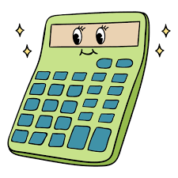

Executando diversas vezes um bloco de código
Loops (Laços de Repetição) são estruturas que permitem executar um bloco de código repetidamente enquanto uma condição for verdadeira.
Imagine que você precisa imprimir "Olá!" 100 vezes. Sem usar loops, você precisaria escrever 100 linhas de código. Usando loops, apenas 3 linhas!
while condição: # bloco de código # que será repetido
Loops WHILE são estruturas que permitem executar um bloco de código repetidamente enquanto uma condição for verdadeira.
contador = 1 while contador <= 5: print(f"Contagem: {contador}") contador = contador + 1 print("Fim!")
Contagem: 1 Contagem: 2 Contagem: 3 Contagem: 4 Contagem: 5 Fim!
A condição de parada é a expressão booleana que determina quando o loop deve terminar.
contador = 0 while contador < 10: # código a ser executado contador += 1
resposta = "" while resposta != "sair": # código a ser executado resposta = input("Digite: ")
x = 10 y = 0 while x > 0 and y < 100: # código a ser executado x -= 1 y += 5
Variáveis que contam quantas vezes algo aconteceu.
contador = 0 while contador < 5: print("Executando...") contador += 1 # Incrementa print(f"Executou {contador} vezes")
contador += 1
contador -= 1
contador += 2
Variáveis que acumulam valores ao longo das iterações.
soma = 0 numero = 1 while numero <= 10: soma += numero # Acumula numero += 1 print(f"Soma: {soma}")
Crie um programa que imprima os números de 1 a 100 usando o comando while.
# Programa: contador = 1 while contador <= 100: print(contador) contador += 1
Crie um programa que calcule a soma de todos os números ímpares entre 1 e 100. O programa deve exibir a soma final e quantos números foram somados.
Agora você precisa contar e acumular, por isso vai recisar de duas variáveis (uma para cada tarefa)
numero = 1 contador = 0 soma = 0 while numero <= 100: if (numero%2) != 0: soma += numero # Soma contador += 1 # Conta numero += 1 print(f"Soma final: {soma}") print(f"Contagem: {contador}")
Quando a condição de parada nunca se torna falsa (False), o programa fica "preso", executando o loop eternamente.
# ERRO: condição nunca muda contador = 1 while contador <= 5: print(contador) # Esqueceu de incrementar! # ERRO: condição nunca se torna False while True: print("Infinito...") # Sem break ou mudança na condição
# CORRETO: modificar a condição contador = 1 while contador <= 5: print(contador) contador += 1 # Incrementa!
Sempre verifique se a variável da condição está sendo modificada dentro do loop!
Comandos especiais que alteram o fluxo de execução dentro de loops.
Interrompe completamente a execução do loop.
contador = 1 while contador <= 10: if contador == 6: break # Sai do loop print(contador) contador += 1 print("Fim") # Saída: 1, 2, 3, 4, 5, Fim
Pula para a próxima iteração, ignorando o resto do código.
contador = 0 while contador < 5: contador += 1 if contador == 3: continue # Pula para próxima iteração print(contador) # Saída: 1, 2, 4, 5
while True: idade = input("Digite sua idade (ou 'sair' para terminar): ") if idade == 'sair': break # Sai do programa if not idade.isdigit(): print("Por favor, digite apenas números!") continue # Volta para o início idade = int(idade) print(f"Você tem {idade} anos.") break # Entrada válida, sai do loop
Peça números ao usuário até que ele digite 0, então exiba a soma de todos os números informados.
Digite números para somar. Digite 0 para terminar. Número: 10 Número: 5 Número: 3 Número: 0 Soma total: 18.0
Implemente um jogo onde o usuário tenta adivinhar um número secreto entre 1 e 100 que é definido previamente no início do jogo.O jogador tem 5 tenttivas para acertar o número. Se acertar, recebe uma mensagem de felicitação e o jogo se encerra. Se o jogador falhar, o jogo termina com uma mensagem de derrota.
Altere a resposta do exercício anterior, inserindo uma forma de sortear o número secreto para que o jogo seja mais divertido.
Utilize a biblioteca random para isso.
random
Crie uma calculadora que realiza as quatro operações aritméticas básicas (soma, subtração, multiplicação e divisão) com um menu interativo onde o usuário escolhe as operações até decidir sair.
Para cada operação selecionada, solicite também ao usuário dois números para serem utilizados no calculo.
Na operação de divisão, não permita que sejam feitas divizões por zero.

while True: print("\n=== CALCULADORA SIMPLES ===") print("1. Somar") print("2. Subtrair") print("3. Multiplicar") print("4. Dividir") print("0. Sair") opcao = input("Escolha uma opção: ") if opcao == "0": print("Obrigado por usar a calculadora!") break else: a = float(input("Primeiro número: ")) b = float(input("Segundo número: ")) if opcao == "1": print(f"Resultado: {a + b}") elif opcao == "2": print(f"Resultado: {a - b}") elif opcao == "3": print(f"Resultado: {a * b}") elif opcao == "4": if b != 0: print(f"Resultado: {a / b}") else: print("Erro: Divisão por zero!") else: print("Opção inválida!")